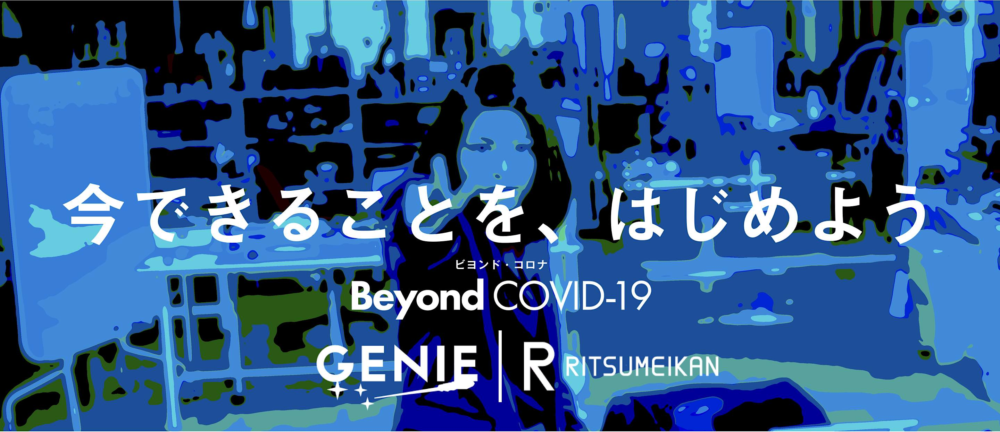

小中高生のための、コロナを考えるコンテスト
ビヨンドコロナコンテストとは
今の学生はコロナウイルスによって様々な機会を失っている。新学期、新しいクラスになったのに授業を新しいクラスで受けることができなかったり、入学したのに入学式がなかったり、卒業式でさえ正式な形で行えなかったり、インターハイの中止で部活動の引退試合がなくなったりなど、コロナウイルスの影響で私たちの青春の時間が消されてしまっています。失われた時間はもう戻ることはありません。
このコンテストは、そんなコロナ禍の状況にいる高校生が主体となって運営しているコンテストです。コロナウイルスで様々な社会活動が停止しているなか、私たち高校生には何かできることはないのかを考えた結果、今起きている初めての事態に苦しんでいる学生向けに何か新しいイベントを開催することだと思いました。
このコンテストを開催する目的
次の世の中を創っていくのは、コロナに青春の時間を奪われた私たち学生です。 次の世代を創っていく若者たちは今の状況を踏まえ、どのような事を考えているのか。次の世の中がどうなっていくのかを、中高生の考えをパブリックにすることで、日本の学生たちの思いを誰もがみられる状態にし、日本を変えていくことを目標としています。コロナの影響でどんなことが起こったのかを次の世代にも伝えていくのも、私たちの使命です。